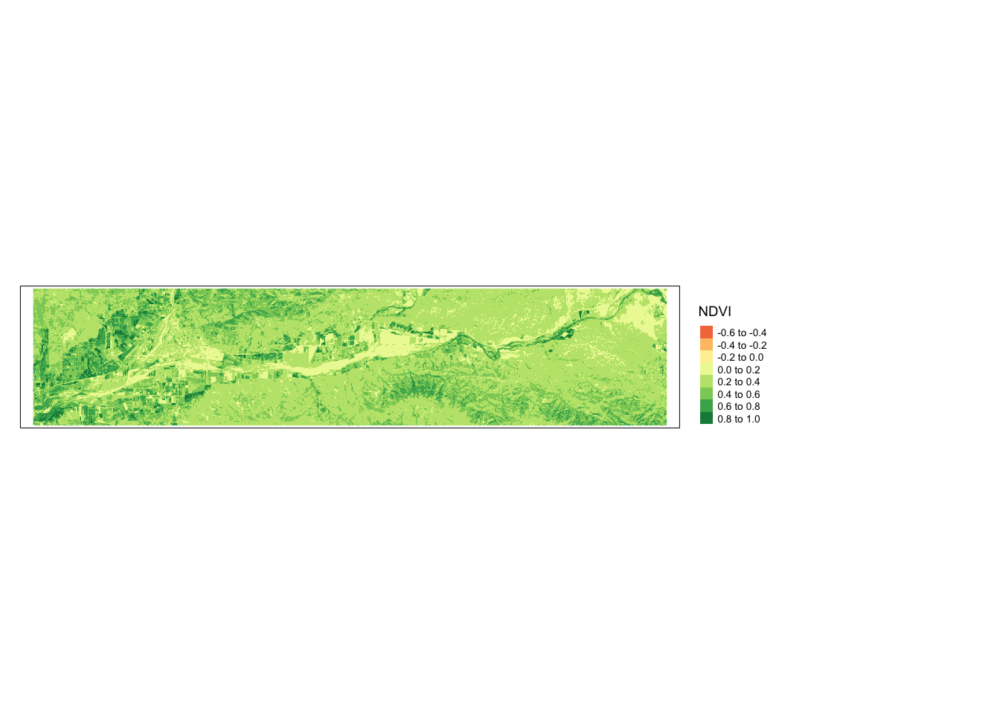

── Conflicts ────────────────────────────────────────── tidyverse_conflicts() ──
✖ tidyr::extract() masks terra::extract()
✖ dplyr::filter() masks stats::filter()
✖ dplyr::lag() masks stats::lag()
ℹ Use the conflicted package (<http://conflicted.r-lib.org/>) to force all conflicts to become errors
library(here)
here() starts at /Users/kaiju/MEDS/EDS223/eds223_week8
library(tmap)
Breaking News: tmap 3.x is retiring. Please test v4, e.g. with
remotes::install_github('r-tmap/tmap')
# create a function to calculate NDVIndvi_fun <-function(nir, red){ # nir is near infrared(nir - red)/(nir + red)}
Complete NDVI for a single scene
landsat_20180612 <- terra::rast(here("data","landsat_20180612.tif"))# re-name each layernames(landsat_20180612) <-c("blue","green","red","NIR","SWIR1","SWIR2") # SWIR is short wave infrared# apply our NDVI funndvi_20180612 <-lapp(landsat_20180612[[c(4,3)]], fun = ndvi_fun) # local algebra, applied to each cell, c(4,3) is the layers, red and nirtm_shape(ndvi_20180612) +tm_raster(title ="NDVI") +tm_layout(legend.outside =TRUE)
Variable(s) "NA" contains positive and negative values, so midpoint is set to 0. Set midpoint = NA to show the full spectrum of the color palette.

Compute NDVI for all scenes
ndvi_fun <-function(nir, red){ # nir is near infrared(nir - red)/(nir + red)}
create_ndvi_layer <-function(i){# step 1: read in scene landsat <- terra::rast(files[i])# step 2: rename bands in scene names(landsat) <-c("blue","green","red","NIR","SWIR1","SWIR2")# step 3: compute NDVI ndvi <-lapp(landsat[[c(4,3)]], fun = ndvi_fun)return(ndvi)}
# get list of all our files files <-list.files(here("data"),pattern ="*.tif", full.names =TRUE) # full.names gives complete file path
# stack all our rast layers, one per scene, containing its NDVIall_ndvi <-c(create_ndvi_layer(1),create_ndvi_layer(2),create_ndvi_layer(3),create_ndvi_layer(4),create_ndvi_layer(5),create_ndvi_layer(6),create_ndvi_layer(7),create_ndvi_layer(8))# rename the layersnames(all_ndvi) <-c("2018-06-12","2018-08-15","2018-10-18","2018-11-03","2019-01-22","2019-02-23","2019-04-12","2019-07-01")
# create a df out of "files" to then use str_subset file_names <-data.frame(file_name = files) %>%mutate(date =str_sub(file_name, start =-12L, end =-5L))# using str_match may be easier names(all_ndvi) <- file_names$date
Compare NDVI across veg communities
Get data on veg communities
sites <-st_read(here("data","study_sites.shp"))
Reading layer `study_sites' from data source
`/Users/kaiju/MEDS/EDS223/eds223_week8/data/study_sites.shp'
using driver `ESRI Shapefile'
Simple feature collection with 5 features and 1 field
Geometry type: POLYGON
Dimension: XY
Bounding box: xmin: 314413.3 ymin: 3803180 xmax: 353848.7 ymax: 3811694
Projected CRS: WGS 84 / UTM zone 11N